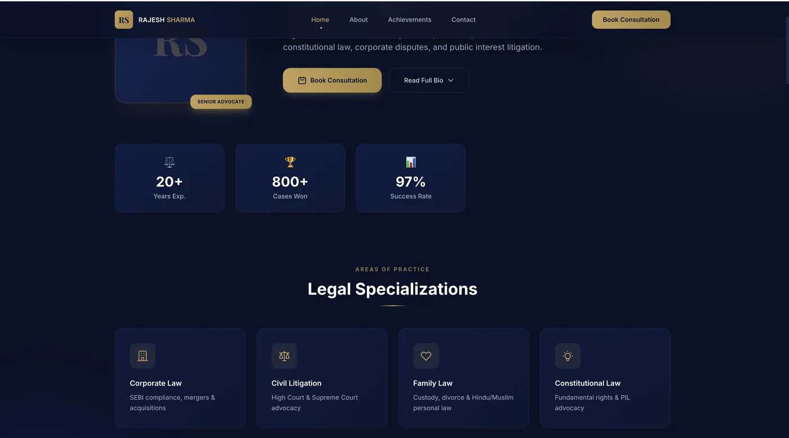
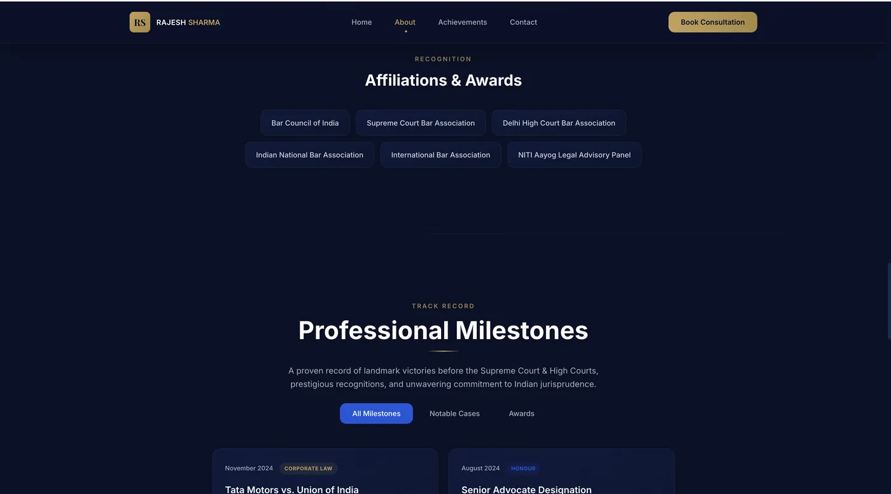
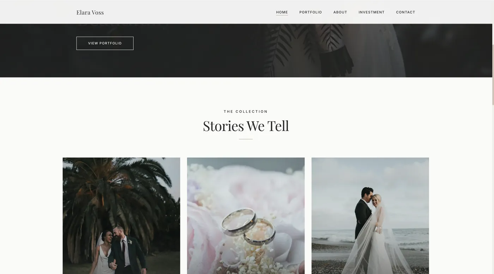
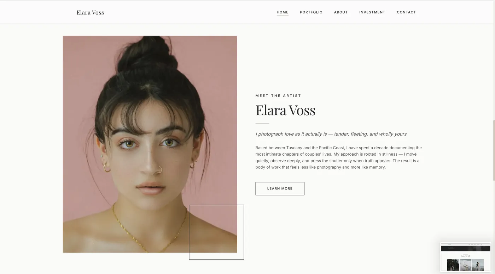
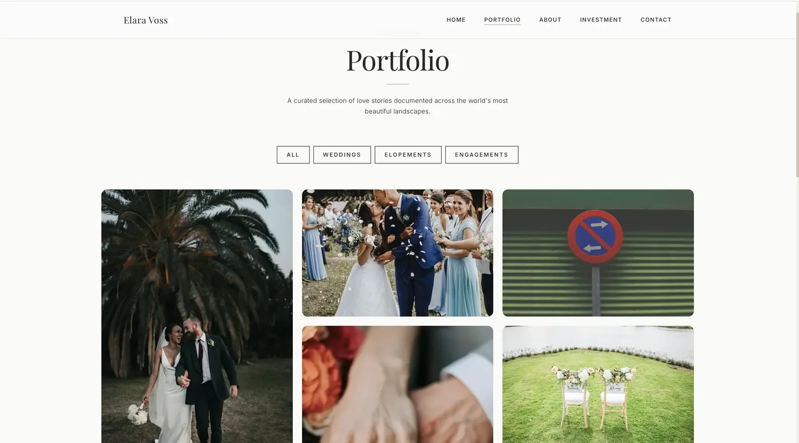
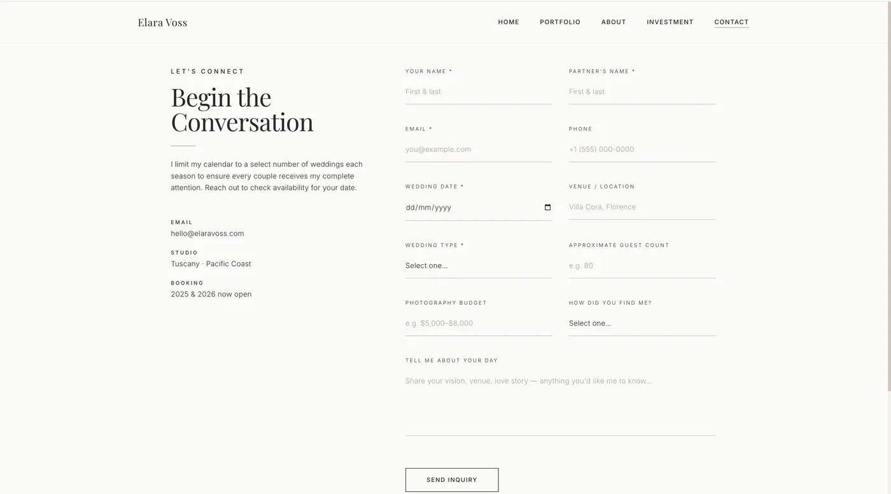

Client products, shipped in hours.
Two complete client-facing products — a senior advocate's chambers site and a luxury wedding-photography brand — each scoped, designed, built, and deployed in a single agent-driven pass. The proof of the forward-deployed model isn't one big system; it's throughput: real products, real deadlines, live URLs.
Chambers — Senior Advocate.
Professional presence for a Supreme Court senior advocate: practice areas, credentials, and consultation intake — trust-focused design for a conservative profession.


Atelier — Wedding Photography.
Luxury brand site for a wedding-photography studio: editorial galleries, portfolio storytelling, and enquiry flows — the opposite design brief from Chambers, delivered in the same pass.




The point of this pair: two different industries, two opposite aesthetics (sober legal authority vs. luxury editorial), same day, same agent pipeline. That range — and the speed — is what agent orchestration buys.
legal: vite spa · wedding: next.js · both on netlify